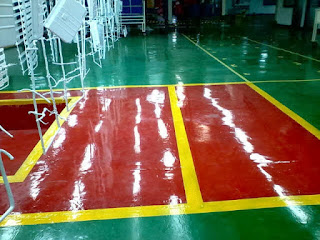

Kontraktor Jasa Pengecatan Epoxy Lantai Bontang | ☎ 0813 1800 7480 (Apip)
Jasa Epoxy Lantai di Bontang
Epoxy sendiri yaitu sebuah bahan kimia resin dari hasil polimerisasi epoksida. Cat epoxy lantai sungguh-sungguh tahan lama dan dapat membendung tekanan tinggi, cat yang betul-betul handal untuk permukaan lantai bangunan anda. Kecuali dari itu, permukaan yang dilapisi epoxy ini juga memberikan kemudahan dalam hal pemeliharaan, serta keterjangkauan tarif sehingga memberikan solusi untuk menuntaskan setiap retak, spalling, atau kerusakan beton. Permukaan lantai yang menggunakan cat epoxy akan jauh dari kerusakan. Sebab cuma itu saja, cat epoxy juga tahan terhadap bahan kimia, lemak, air, debu dan juga bahan kimia lain yang bisa dikatakan serupa. Polimer epoxy memiliki banyak varian sifat yang berbeda tregantung bahan kiia dasar dalam resin. Bagian itu epoksi mempunyai kelebihan dan fungsi yang berbeda-beda.
jasa epoxy lantai Bontang bisa segera anda sewa di dis.or.id. Dengan harga yang terjangkau dan pekerja yang professional sehingga menjadikan lantai yang tahan kepada air dalam rentang waktu yang lama.
Jasa Epoxy Lantai 3D Bontang
Ingin memiliki lantai rumah yang tak lazim, anda bisa memanfaatkan jasa epoxy lantai 3D. Epoxy lantai 3D ini adalah teknik baru dalam sebuah pengecatan lapisan epoxy agar desain yang diberi tak terlalu monoton polos. Seandainya hal yang demikian bukan hanya sekedar gambar dekoratif, benda seni berskala besar, yang secara fundamental merubah gagasan seputar apa yang mungkin terlihat seperti lantai.
Lantas tak semua jasa epoxy 3D di mewujudkan lukisan yang baik dan juga mutu terbaik dari cat yang dipakai. Untuk itu sebaiknya Anda mengunjungi situs dis.or.id. Disana anda akan mendapatkan sebuah penawaran menarik mengenai jasa lantai epoxy 3D yang bisa anda sewa jasanya.
Distributor & Supplier Cat Epoxy Bontang

Kini Anda sudah mengenal cat epoxy tak hanya diaplikasikan untuk lantai saja tapi juga kayu. Kini sudah banyak merk cat epoxy yang bisa digunakan pada seluruh tipe lantai. Dan cat epoxy lebih menghasilkan tampilan dari permukaan lantai yang cukup rapi, mengkilap, berkilau dan juga tentu saja lebih nampak indah. Sekarang banyak keunggulan bisa diketahui dengan mengaplikasikan cat epoxy pada sebuah industri seperti lantai akan awet dan tahan lama, tahan kepada segala polutan di lingkungan industri.
Tersedia dengan berbagai opsi harga layak dengan mutu yang dimiliki dan merek yang ada pada cat epoxy.
Anda bisa mendapatkan Cat epoxy dengan berjenis-jenis merk terbaik serta berbagai ragam varian warna dengan mengunjungi dis.or.id. Harga yang ditawarkan bahkan amat relatif murah.
Jasa Waterproofing
Tidak anda tertarik untuk menggunakan waterproof pada atap dak beton rumah anda, ada dua macam waterproof yang terdapat di pasaran yakni waterproof dengan wujud cairan dan format padat. Jikalau benda bisa mempunyai sifat hal yang demikian dan bisa digunakan pada lingkungan tertentu yang cenderung bahasa atau berada di bawah air. Merk tersebut sudah banyak diaplikasikan untuk menyelesaikan atap yang gampang bocor. Langsung masih banyak merk waterproofing yang bisa anda beli tentu dengan harga yang beragam. Fungsi utama dari waterproofing yakni melindungi dan menjaga ketahanan struktur bangunan supaya lebih tahan lama bila dipakai pada bentang waktu yang tidak menentu.
Tidak anda sedang membutuhkan jasa waterproofing dengan pekerja yang professional. Anda bisa berkunjung di dis.or.id. Anda dapat mengaplikasikan waterproofing coating untuk lapisan yang anda inginkan. Dis.or.id juga menyediakan jasa waterproofing coating yang bisa anda manfaatkan.
Jasa Floor Hardener
Sudah floor hardener pada bidang lantai bangunan anda. Floor hardener yaitu bahan sebagai pengeras dan pelicin lantai beton yang terbuat dari beberapa campuran bahan, diantaranya: Pasir, Grading, Semen, Silika, Pigmen, dan sebagainya. Floor Hardener awam dipakai pada lantai garasi, area parkir, zona pergudangan, zona pabrik / industri, dan zona-zona yang membutuhkan lalu lintas. Floor hardener biasam dipakai pada lantai garasi, zona parkir, zona pergudangan, area pabrik / industri, dan zona-zona yang memerlukan lalu lintas. Konsumsi keperluan material Floor.
Pelayanan yang pesat dan tepat pastinya akan anda peroleh disana. Tersedia kontak yang bisa anda hubungi jikalau mau menanyakan rinci harga pengerjaan jasa floor hardener.
Informasi Pemesanan Lebih Lanjut:
Google Maps: https://www.google.com/maps/d/u/0/viewer?mid=1A8EZxqB3N9FEf6EYOkM0QscbvVcmEYqX&ll=-6.253455000062163%2C106.82859010000004&z=18
Note: https://www.facebook.com/notes/distributor-of-industrial-supply/kontraktor-jasa-epoxy-lantai/1782732822026597/
Event: https://www.facebook.com/events/1995233694078319/
Portfolio Produk: https://www.facebook.com/pg/DistributorOfIndustrialSupplyDIS/photos/?tab=album&album_id=1683674925265721
Behance: https://www.behance.net/gallery/60123971/Layanan-Jasa-Epoxy-Lantai